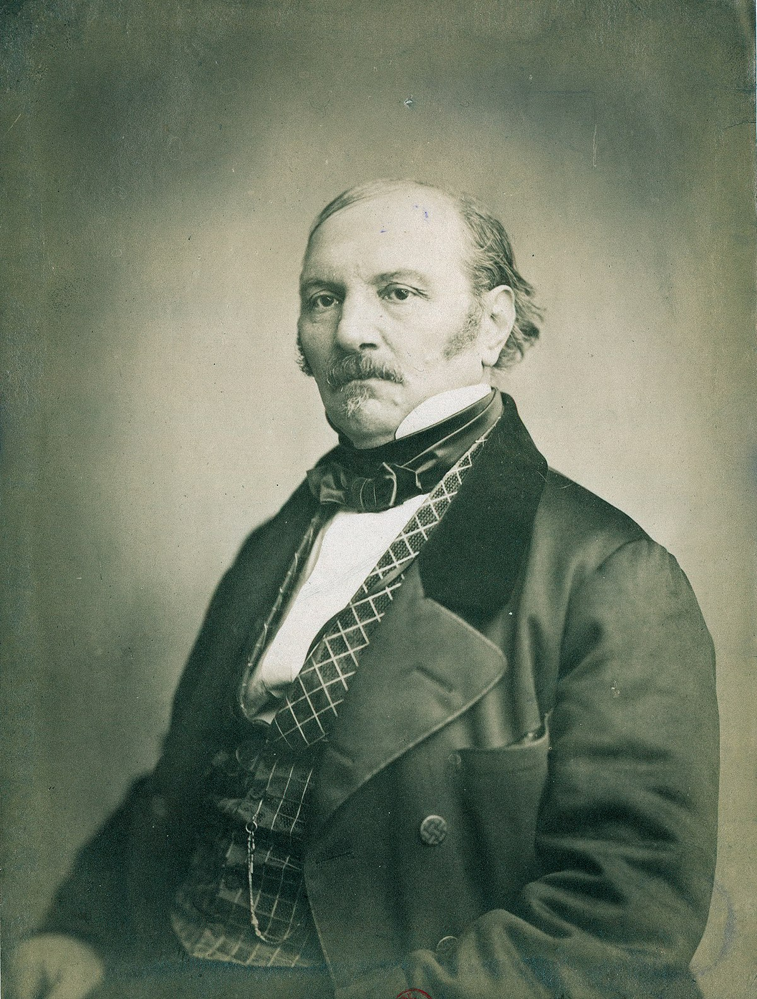

-Fora da caridade não há salvação-

O que é o Espiritismo?
O Espiritismo é uma doutrina filosófica e religiosa que busca compreender a natureza, origem e destino dos espíritos, além de promover a evolução moral e intelectual do ser humano.
Endereço
Rua Pontes de Miranda esquina com a Rua Brasil